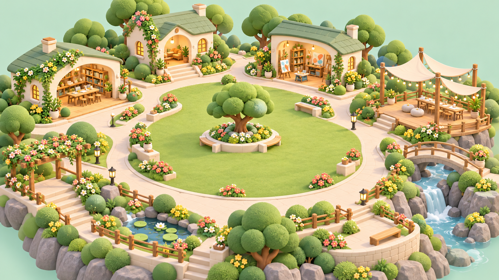

今日の一歩を、残そう。
45日シートに、実践と気づきをひとつ。
今日の実践を記録する ↗PEOPLE. LEARNING. CONNECTION.
誰かの一歩が、みんなの可能性になる。
今日も、ここから一緒に。
今期の実践と、これまでの歩み。

45日シートに、実践と気づきをひとつ。
今日の実践を記録する ↗得意なこと × 今、必要なこと。
役割から仲間を見つける。
FIND SOMETHING USEFUL
資料を探す場所と、AIに相談する場所を分けて、迷わず使えるように。
TANAKA YUICHI AI / MCP
PLC専用の会話画面を増やさず、MCPで機能をつなぐ方針です。
利用できるクライアント・プランを検証し、共通の接続ガイドに掲載。
共通の秘密キーを配布せず、本人の会員資格と利用権限を照合。
本人の権限内で動作確認。困ったときの窓口と権限解除の手順を用意。
ここは接続設計の案内です。実際の接続URL・認証方式・対応環境は検証後に設定します。
DESIGN DIRECTION / 2026.10.06
本人が選んだ顔写真、またはSNSのプロフィール画像から、髪型・輪郭・眼鏡などの特徴を残したアバター候補を生成。本人が確認して採用します。写真を使わないプリセットも用意します。
2Dイラスト、軽い動き、3Dモデルは段階的に制作。同じ会員ID・ジョブ・装備を参照し、表示を切り替えても活動やポイントは変わりません。
丸い造形、やさしい表情、草木の緑、クリーム色の道、少量のコーラル。歩き回らなくても、建物を押せば機能を開ける設計です。2Dでも同じ仲間と機能へ到達できます。
初期は軽量表示。選択した表示を保存し、動きを抑える設定にも対応。本物の3Dでは端末性能に応じた品質調整と2Dへの復帰を備えます。
PLCポータルがサービス全体。PLCパークは交流広場。PLC AIライブラリは資料・スキル・事例の置き場。田中祐一AIは相談する機能です。
画面のメニューは「AIライブラリ」と短く表示。「PLC AIスタック」は技術構成や積み上げを連想しやすいため、メンバーへの分かりやすさを優先して第一案から外します。
田中祐一AIは対応するAIクライアントからMCPで利用。独自のブラウザ会話UIは運用しない方針です。ポータルには接続ガイド・資料・利用状況を置きます。
会員資格・権限・利用上限はMCP側で確認。クライアントごとの会話内容や全利用時間が自動で取得できるとは扱いません。実サービスの停止はまだ行っていません。
写真の取り込み → 特徴を保った2D候補 → 本人の採用 → 軽いアニメーション → 同じデザインで3Dモデル制作 → 表情・動作・装備位置の確認、という順序とします。一枚の生成画像だけで、回転・歩行・着せ替え可能な3Dモデルが完成したとは扱いません。
SNS URLからの無断自動収集は行わず、本人が選択した画像か、許可された連携で取得します。生成への送信前に用途・外部処理先・保存と削除を案内し、元写真はプロフィールへ自動公開しません。今回のページは写真をアップロードせず、既存の架空キャラクターで選択操作だけを体験できます。
3D表示は利用者の選択で読み込み、画面外では描画を止める方針。Three.js公式の必要時描画と画面サイズ対応を実装検討の参考にします。